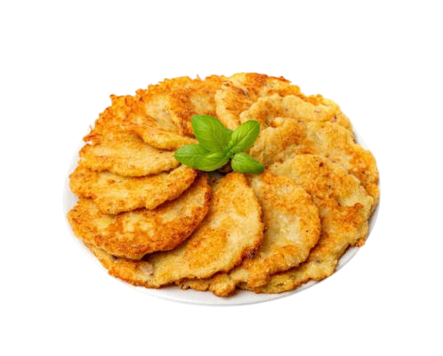

Найхрусткіші деруни твого міста!
Ми створили цю мережу, бо переконані: ідеальний дерун — це справжнє мистецтво. Наші кухарі знають секрет тієї самої золотавої скоринки, що апетитно хрустить, та ніжної, соковитої серединки, яка тане в роті.
Для приготування ми використовуємо тільки відбірну фермерську картоплю та свіжі локальні продукти. Кожна порція готується виключно "з-під ножа" одразу після вашого замовлення, щоб ви могли насолодитися справжнім, гарячим смаком домашньої кухні.
🕒 Графік роботи: Щодня з 09:00 до 22:00
📞 Гаряча лінія дерунів: 0 678 16 11 63
До відкриття "Дерун & Co":
59
